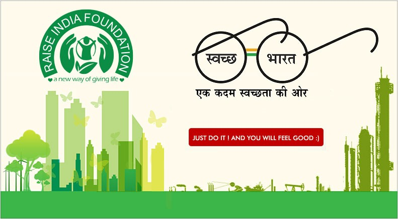

Cleanliness is nothing but, keeping our body, mind, attire, home, neighborhood and our work place clean and tidy. The importance of cleanliness and hygiene cannot be ignored by any society. Every faith and civilization emphasizes the significance of cleanliness. Infact, cleanliness has been perceived one of the critical criteria to judge a society’s development. Cleanliness of the neighborhood and environment is a prerequisite for the social and mental health. Cleanliness is one of the most critical practice to maintain a clean and healthy environment. It may be classified as public hygiene and personal hygiene.

Personal hygiene is the concept of maintaining cleanliness of the external body. It is the first and foremost step to good health. It not only protects you from poor health, but also protects those around you from suffering ailments, that arise from poor personal hygiene.
Habits such as washing hands, bathing, oral care, nail care, wound care and cleansing of personal utensils may all look repetitive and unexciting, but they all are considered as personal hygiene.
Failure to maintain a standard of hygiene can have serious consequences. It contributes to an increased risk of getting an infection or ailment. Also it can affect many social and psychological aspects of an individual. Lack of personal hygiene can cause social embarrassment. Many people would rather distance themselves from a person who has a poor personal hygiene.
We should notice our attire and wear only washed clean clothes to ensure better physical and mental health. People who maintain cleanliness in their life are liked by everyone. No person likes to live or speak with unhygienic people because they fear of infectious diseases and bad odor.
Poor personal hygiene can have serious consequences on the success of job interviews or the chance of promotion. No organization wants to retain or hire people who do not seem to groom themselves properly.
We need to keep our surroundings neat and tidy. This will help us to live healthily and help in the betterment of society.
Every household produces waste or garbage. Throwing garbage irresponsibly all over the place causes stench and pollute the environment. Do not litter on the road or in your neighborhood. Littering causes land, air and water pollution. Dirtying our surroundings will only cause harm to us.
We should refrain from spitting on the road as it is infectious. It is a filthy habit that can spread germs and cause health issues. An unhygienic environment is a health hazard and causes several diseases and ailments. Awareness of the cleanliness is the need of the hour in our country where diseases like Dengue fever, swine flu, malaria, chicken fox and jaundice are fast spreading.
We need to eat neatly without spilling food and drinks. Good table manners are critical. Leave the plate in the kitchen sink after finishing the food. Make sure to gargle after every meal so that the food particles in the mouth get washed away. Last but not the least, cleaning the table is our responsibility after the dinner is over.
Cleanliness is next to Godliness:
Considering the significance of cleanliness, it has been compared to godliness. It is also considered as a sign of spiritual growth and contributes to moral purity. This further elevates our moral and spiritual life, and at last brings us nearer to God.
Cleanliness ensures a healthy mind and physique. A person with clean habits can destroy his/her destructive desires and dirty ideas with ease.
Conclusion: Cleanliness is not the responsibility of only one person however; it is the responsibility of each and every person living in the home, city and country. We should understand its different dimensions to fully understand its benefits. We all should take a cleanliness pledge that we will never litter and will never allow anyone to litter.
Cleanliness improves our morale and self- esteem as well as respect from other people. It enhances our status in the society. It plays a great role in making a person prominent in the society. Cleanliness is very important to maintain our healthy lifestyle and accepted standard of living.
Cleanliness is a bigger issues in developing countries due to high illiteracy rate. A person must be taught the importance of cleanliness from the childhood by parents and teachers.
Actually, we discourage this.
Scrape all the food residue off the plate into the garbage pail in the kitchen (food residue clogs the sink so remove it before rinsing your plate). Then wash the plate in the sink, dry it with a paper towel, and return it to the kitchen.
While there may be people, such as apparently your Mom or your partner or housemates, for whom there is no greater joy in life than cleaning up after other people, unfortunately none of these saintly people seem to work here. Your food residue is more likely to attract cockroaches and mice.
Well yes, they are marvels of creation: supremely adaptable, perky, curious, and they are kind of neat in a creep-crawly incontinent sort of way, but unfortunately there is evidence that they spread disease. So we need to discourage them by washing up, not keeping food in desk drawers, and not putting food garbage anywhere except in the covered garbage pail in the kitchen.
Actually, you should do it right away.
You should rinse them (see above under "washing") and then put them in the recycling box in the kitchen. The rinsing is to prevent fruit fly infestations, of which we've had several.
No, actually you should put them in the garbage pail.